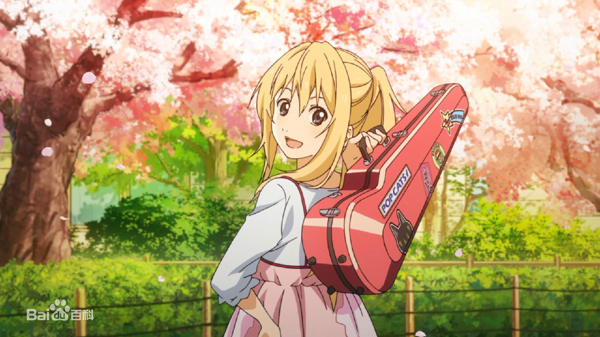
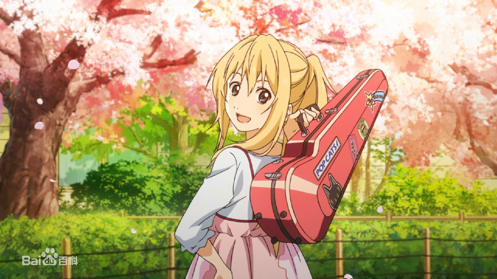
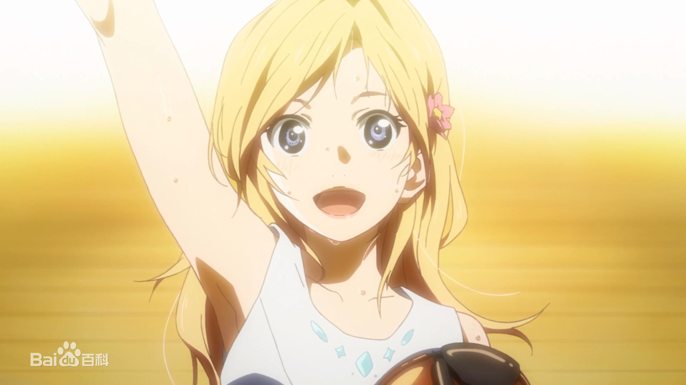
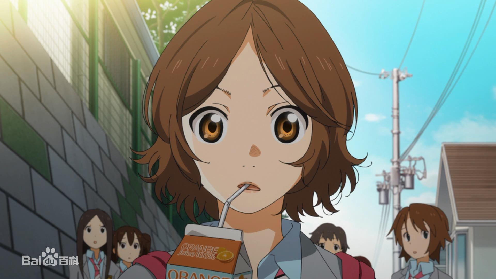
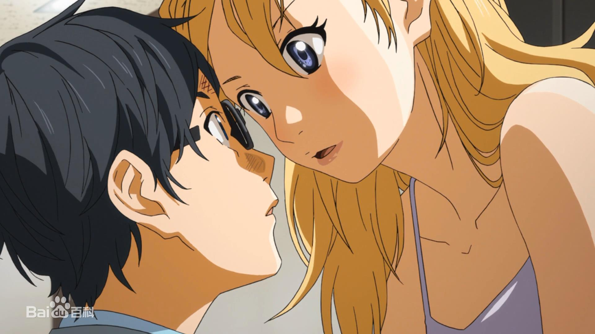
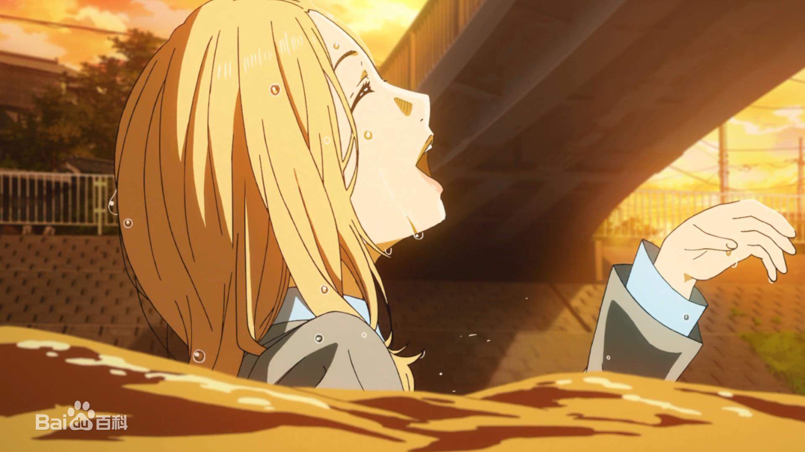

第01话：单调·多彩
有马公生的母亲一心想把有马培育成举世闻名的钢琴家，而公生也不负母亲的期望，在小学时就赢得许多钢琴比赛的大奖。11岁的公生要参加欧洲音乐赛时，他的母亲过世，从此他变得讨厌钢琴，慢慢放弃了演奏。在他14岁的春天，公生偶遇美少女小提琴手宫园薰，并被薰的音乐吸引。公生被薰误会是偷拍狂魔而留下了不好的印象，在青梅竹马小椿的介绍下，公生和薰成为了好朋友。
有马公生的母亲一心想把有马培育成举世闻名的钢琴家，而公生也不负母亲的期望，在小学时就赢得许多钢琴比赛的大奖。11岁的公生要参加欧洲音乐赛时，他的母亲过世，从此他变得讨厌钢琴，慢慢放弃了演奏。在他14岁的春天，公生偶遇美少女小提琴手宫园薰，并被薰的音乐吸引。公生被薰误会是偷拍狂魔而留下了不好的印象，在青梅竹马小椿的介绍下，公生和薰成为了好朋友。
公生等人和薰踩点赶到比赛会场，比赛场上紧张凝重的空气让公生想起母亲的事。公生、小椿、阿渡三人留下观看比赛，公生很久没有听过现场演奏，他隐约感到不安，但内心仍然向往着音乐。终于轮到薰出场了，她对音乐的独特理解赢得全场的掌声，也公生让沉寂许久的音乐之心跳动起来。公生渐渐喜欢上了薰，可薰却喜欢阿渡，纠结的三角恋上演…
公生无法听到自己所弹奏的曲调，因此放弃了钢琴演奏。薰鼓励公生不要放弃对音乐的热爱，邀请公生在比赛时担任她的伴奏者。公生觉得自己无法胜任，四处躲着薰。小椿希望公生振作起来，于是和薰联合起来，对公生采取疯狂的洗脑计划。薰在天台上找到公生，并成功说服他一起演奏，可比赛早已开始，他们能赶到么？
在小椿和阿渡的帮助下，公生和薰及时赶到比赛会场。公生对自己很没信心，赛前一直拼命练习，薰的鼓励给了他力量，两人登台表演的时刻到了。一开始他们俩配合的十分默契，但公生始终被心魔困扰，他突然无法听到弹奏的钢琴声，无奈下只好放弃伴奏，剩下薰一个人演奏着小提琴……
薰在演奏结束时突然晕倒，公生等人来到医院看望她。由于比赛中状况不断，薰失去决赛资格，公生对此十分愧疚。薰却毫无怨言，她强烈希望公生能够继续弹奏钢琴，并以公生的道歉要求他参加钢琴大赛。在另一边，小椿被自己曾经憧憬的前辈告白，但心里却没有涌出激动的恋爱心情。